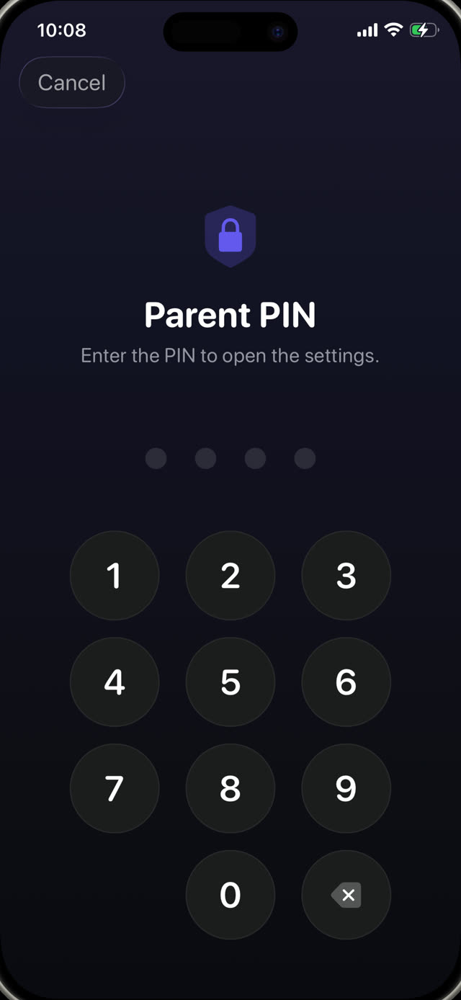

Here is the setup itself, then the doors, then how to close them.


The built-in way: Apple Screen Time
On the child's iPhone, or from your own device if the phone is in your Family Sharing group:
- Open Settings and tap Screen Time.
- Tap Content & Privacy Restrictions and turn it on.
- Use App Limits to cap categories or individual apps, and Downtime for hours when only what you allow can run.
- Set a Screen Time passcode that is different from the phone unlock passcode, and do not use a birthday.
- Under Content & Privacy Restrictions, block changes to the passcode and to account settings.
The loopholes children actually find
None of these require any technical skill. All of them get shared in the school playground:
- Deleting and reinstalling. An app limit tied to a specific app can be dodged by removing it and downloading it again, unless you restrict app installation too.
- The browser. Blocking the TikTok or YouTube app does nothing if Safari can open the same site. Block the category or restrict web content as well.
- Changing the clock. Moving the device date and time can confuse limits, unless you lock the date and time settings.
- Watching you type. The passcode gets learned by shoulder-surfing more often than by guessing.
- 'Ask for more time'. If approvals are one tap away on your phone, you will approve them while distracted, and the limit is gone.
The deeper problem with time limits
Even a perfectly sealed setup has a design flaw: when the time is up, nothing has changed except that your child is now bored and annoyed with you. Blocking creates a vacuum. What fills it is either a negotiation or a workaround.
That is why the more durable setup does not just block, it puts something on the other side of the block. The apps are not gone; they are behind a task worth doing.
Blocking with a purpose
Guardian Reader uses the same Apple Screen Time system underneath, so the blocking is enforced at the OS level, not by a browser extension or a profile that can be deleted casually. The difference is what unlocks it.
Instead of waiting out a timer, your child scans the pages of a physical book and reads them out loud, straight through. The app verifies the reading against the scanned text and releases the minutes you set. When they run out, the apps lock again by themselves.
Setting it up
- Install Guardian Reader on the child's iPhone and open it.
- Allow Screen Time access when prompted; this is Apple's own permission.
- Choose the apps or categories to lock: games, YouTube, TikTok, social, or all of them.
- Set pages per session and minutes earned.
- Create a parent PIN. It is separate from the phone passcode and from Face ID, because the face registered on that iPhone belongs to your child.
Why the PIN is not Face ID
This detail matters more than it sounds. On a child's phone, biometrics are the child's, so any 'parent lock' that unlocks with Face ID unlocks for them. Guardian Reader deliberately uses a PIN only you know, with a lockout after repeated wrong attempts.
Reading unlocks the screen.
Free to download · No accounts, no tracking
Get Guardian Reader for iPhone